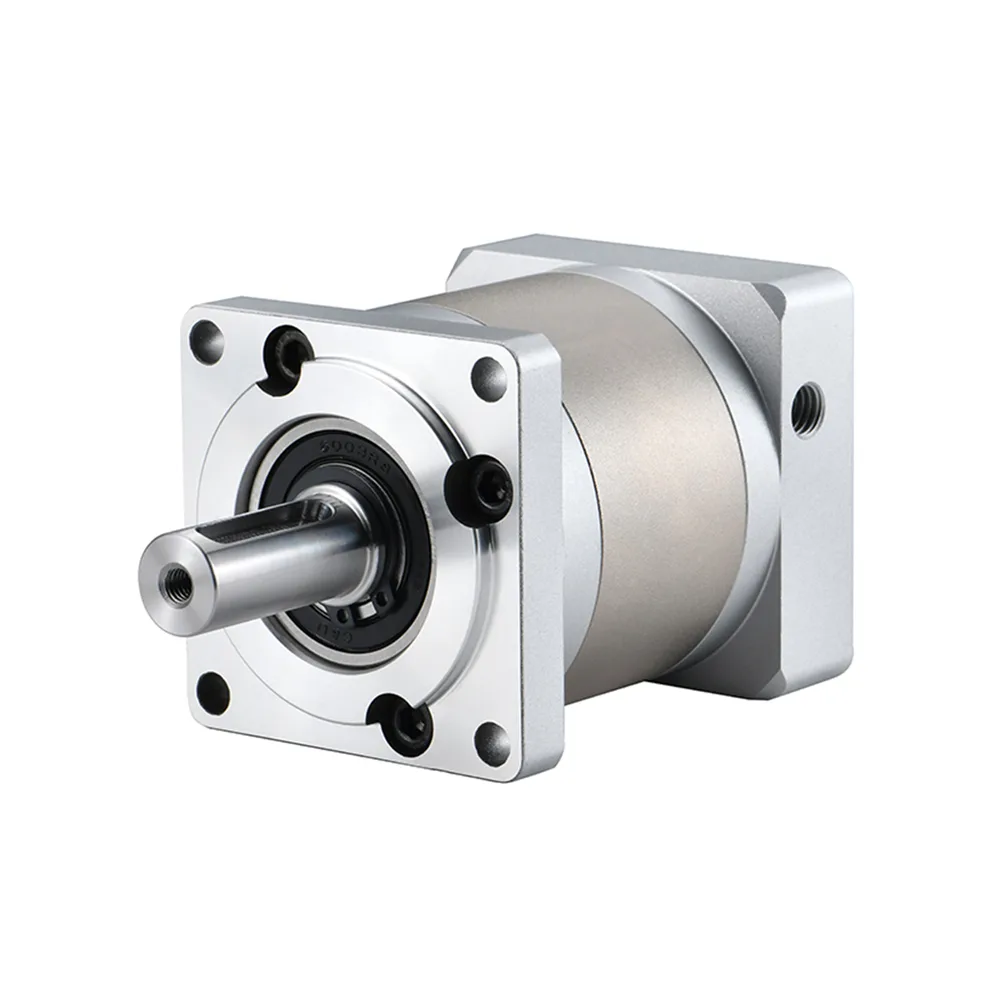

China's Planetary Roller Screw Suppliers
The linear cousin — same name, different job, and a much harder grind.
Harmonics handle the wrists and fingers; planetary reducers carry the torque in the hips, knees and waist. China now builds both — and the planetary layer is where the price war started. Here is who makes them, what the specs actually say, and how they line up against Neugart and Nabtesco.

A humanoid's legs are where the money hides. Wrists and fingers get the attention, but the hip and knee joints carry the whole machine, absorb every landing, and need torque that a small harmonic drive cannot deliver. That job falls to planetary reducers: three planetary gears around a sun gear, a ring gear around them, single-stage ratios of 3 to 10, efficiency up to 98%, and a price per unit that is the lowest of any precision transmission.
It is also the least defensible part of the joint stack. A planetary gearbox is fundamentally a gear-grinding problem, and China already had a large gear-grinding industry before humanoids existed. That is why this layer localized first — and why its margins collapsed first.
| Type | Planetary | Harmonic | RV |
|---|---|---|---|
| Ratio (typical) | 3–10 single stage; up to 512 multi-stage | 50–120 | 41–161 |
| Backlash | ≤3 arcmin standard; ≤1 arcmin precision | ≤1.5 arcmin | about 1 arcmin |
| Relative cost | Lowest | Middle | Highest |
| Where it goes | Hips, knees, waist rotation; first stage of actuators | Wrists, elbows, fingers | Heavy industrial joints; some hip and waist designs |
Ratios and backlash: Zhongda's published catalogue and a 2025 Dongwu Securities comparison of the three product lines. Backlash is quoted per stage, so a two-stage gearbox is looser than the single-stage number.
Zhongda Leader (中大力德, 002896.SZ) is the only A-share company mass-producing all three precision transmission types — planetary, RV and harmonic. That matters more than it sounds: a humanoid maker designing a joint can source the reducer, servo motor and drive from one supplier, and Zhongda sells exactly that combination as an integrated module.
Its Unitree relationship is the number the market trades on. Chinese media and broker channel checks put Zhongda at more than 63% of Unitree's reducer purchases, under a 2025–2027 agreement worth about RMB 3.2 billion that could support roughly 110,000 humanoids. None of that has appeared in a stock-exchange announcement, and the company did not confirm the figures when asked — so treat the share and the contract value as market estimates, not disclosed orders. What is disclosed looks different: 2025 revenue of RMB 1.041 billion, up 6.61%, with net profit down 13.57% to RMB 63 million.
The turnaround only shows up in the third quarter of 2026. Q3 revenue rose 34.90% to RMB 336 million and net profit jumped 122.62% to RMB 24.1 million, while the first nine months were still 9.27% behind on profit. Its integrated "intelligent execution unit" line — reducer plus motor plus drive — became the largest revenue block in the first half, at RMB 253 million, or 42.40% of sales. The company has also disclosed a private placement of up to RMB 530 million, aimed at humanoid joint modules.
| Metric | 2025 full year | 2026 Q3 | 2026 first nine months |
|---|---|---|---|
| Revenue | RMB 1.041bn (+6.61%) | RMB 336m (+34.90%) | RMB 932m (+21.88%) |
| Net profit | RMB 63m (−13.57%) | RMB 24.1m (+122.62%) | RMB 51.9m (−9.27%) |
| Gross margin | 26.1% overall; 21.44% precision reducer | not disclosed | not disclosed |
Source: 2025 annual report and the October 26, 2026 third-quarter filing, as reported by Shanghai Securities News.
Planetary reducers are not a two-horse race. This is the lineup that matters for humanoid programmes in 2026, plus the one non-Chinese name that sets the benchmark.
| Company | What it does | 2026 marker |
|---|---|---|
| Zhongda Leader (中大力德, 002896) | Planetary, RV and harmonic under one roof; reducer + motor + drive modules | Q3 revenue +34.9%, net +122.6%; Unitree share reported above 63% |
| Shuanghuan / Huandong (双环传动, 002472) | RV leader through Huandong; expanding into precision planetary and joint modules | Huandong 2025 revenue RMB 438m, adjusted net RMB 75m; top-5 customers 78–92% of sales |
| Jingduan (精锻科技, 300258) | Precision forging group with a 90%-owned reducer JV | Ships to UBTECH; sampling with Huawei, Xiaomi and AgiBot |
| Haoneng (豪能股份, 603809) | Auto drivetrain maker crossing into planetary and cycloid reducers | Humanoid reducer programmes announced 2025–2026 |
| Xiaxia (夏厦精密, 001306) | Small precision gears and micro planetary gearheads | Hand and finger joints, where unit counts are highest |
| Niusidate (纽氏达特) | Planetary specialist, MINI series for light loads | MINI average price −26% YoY; gross margin 55% → 49% |
| Qinchuan (秦川机床, 000837) | Machine-tool builder that also makes reducers and its own gear grinders | Supplies industrial joints; grinding capacity is the moat |
| Neugart (Germany) | Benchmark planetary line, split into Economy and Precision tiers | 1–8 arcmin precision backlash; the spec sheet everyone compares to |
Two patterns stand out. Almost every Chinese planetary maker came from somewhere else — gear cutting, auto parts, forging, machine tools — and none was founded as a humanoid supplier. Capacity therefore arrived faster than humanoid demand did. And the listed names are not pure plays: Zhongda's precision reducer segment gross margin was 21.44% in 2025, while peers including Niusidate, Leaderdrive and Shuanghuan booked 36% or more at company level. What Chinese planetary suppliers sell today is volume, not margin.
Neugart is the name most Chinese catalogue sheets quietly measure themselves against. The German company splits its line in two — Economy for price, Precision for backlash. Put the published numbers side by side and the interesting part is how narrow the precision gap has become.
| Metric | Neugart PLE (Economy) | Neugart PSN / PSFN (Precision) | Zhongda ZPG |
|---|---|---|---|
| Backlash | 6–22 arcmin | 1–8 arcmin | ≤3 arcmin standard; ≤1 arcmin P0 |
| Rated torque | frame-dependent (see catalogue) | frame-dependent (see catalogue) | 50–380 N·m (frames 20/32/50) |
| Protection | IP54 | IP65 | IP65 |
| Service life | 20,000 h (WPLE) | not stated in the catalogue summary | 20,000 h |
| Efficiency | up to 98% | up to 98% | >95% |
| Relative price | 100 | 100+ | ~70 (company claim) |
Neugart figures from its 2025 catalogue; ZPG figures from Zhongda's ZPG datasheet. Neugart quotes torque per frame size, so that row is not like-for-like and is left qualitative. The usable comparison is backlash: a Chinese standard single-stage unit at ≤3 arcmin is already tighter than a Neugart Economy PLE at 6–22 arcmin, and close to the bottom of Neugart's Precision band.
What a catalogue cannot tell you is whether that number survives 20,000 hours, a million units and a customer's incoming inspection. That is where the German premium still lives — consistency, not concept.
Three price series tell the story better than any forecast. Niusidate's MINI planetary line lost 26% of its average selling price in a year, and its gross margin fell from 55% to 49%. Harmonic Drive Systems units that once sold for RMB 3,000–4,000 now face Chinese equivalents at roughly RMB 1,300. And Laifu's (来福) average harmonic price slid from RMB 802 in 2023 to RMB 573 in 2025.
Planetary is the same movie one act earlier. Zhongda's precision reducer gross margin was 21.44% in 2025, after touching 14.56% at an earlier point in the cycle. The arithmetic is simple: industry trackers count 8 to 9 million units of planned global reducer capacity per year, against roughly 10,000 humanoids shipped in China in 2025 and a 2026 forecast near 100,000 units. Even at 20 reducers per robot, demand does not fill that pipeline before 2027.
So the honest framing is this: planetary reducers are the cost-down lever of the humanoid joint stack, not its profit pool. A supplier that can hold 3 arcmin at a million units and still book 30% gross margin is the one worth watching. Nobody has proven that yet.
Zhongda's ZPG series is a useful reference because the datasheet is public. Three frames cover most humanoid joints, all with a single-stage ratio of 5 available:
| Frame | 20ZPG | 32ZPG | 50ZPG |
|---|---|---|---|
| Rated torque, single stage | 50 N·m | 150 N·m | 380 N·m |
| Weight (1-stage / 2-stage) | 1.2 / 1.5 kg | 3.0 / 3.7 kg | 10 / 12 kg |
| Max input speed | 6,000 rpm | 6,000 rpm | 4,500 rpm |
| Typical joint | Wrist, elbow, hand base | Shoulder, waist rotation | Hip, knee, ankle |
Two-stage ratios of 11, 15, 21, 33 and 45 cover 59–640 N·m across the three frames. Standard backlash ≤3 arcmin single-stage and ≤5 arcmin two-stage; P0 option 1 and 3 arcmin. Rated life 20,000 h, IP65, lifetime lubrication, any mounting orientation, −10 to +90 °C.
The mismatch to plan around is speed. A 50-frame hip joint tops out at 4,500 rpm and is usually run far below that, which is fine for a legged robot and useless for a high-speed industrial axis. Planetary gearboxes are chosen for torque density, not for ratio flexibility — if a design needs 100:1 in one stage, it is not a planetary job.
The grinding base existed. A precision planetary gearbox is a gear-grinding and heat-treatment problem before it is a robotics problem. Qinchuan built machine tools and its own gear grinders; Shuanghuan spent decades cutting automotive gears. When humanoid orders arrived, the machines and the process engineers were already there.
Chinese suppliers sell modules, not parts. Zhongda's reducer-plus-motor-plus-drive unit reached 42.40% of first-half 2026 revenue. Customers buy a tested stack and skip integration work — a real cost saving that a component-only supplier cannot match.
The price tolerance is different. A European precision planetary gearbox can cost more than the rest of a small joint. At 10,000 units a 30% gap is a rounding error; at 100,000 units it decides the bill of materials.
Zhongda Leader (中大力德, 002896.SZ) is the only A-share company mass-producing planetary, RV and harmonic reducers at the same time. Market reports put it at more than 63% of Unitree's reducer purchases, but the company has not confirmed that share in a filing.
Tesla's Optimus has 40 driven joints. A 2024 sell-side model assumed 14 harmonic drives and 4 planetary reducers per unit, but that is an assumption rather than a Tesla disclosure. Many integrated actuators also use a planetary stage as the first reduction inside the joint, so the count depends on the architecture.
Harmonic drives win on backlash and size for wrists, elbows and fingers. Planetary gearboxes win on torque, shock resistance and cost for hips, knees, waist rotation and the first stage of linear actuators. RV drives sit above both for the heaviest, most rigid joints.
Zhongda's ZPG series quotes 3 arcmin or better for a single-stage standard unit and 1 arcmin for its P0 precision option. Neugart's Precision Line is 1 to 8 arcmin and its Economy PLE line is 6 to 22 arcmin, so Chinese standard product sits inside the European precision band on paper. Holding that number across millions of units is the harder test.
Zhongda states that its gear products are priced 30% or more below imported brands. On the harmonic side the gap is wider: Chinese product sells at roughly 60% to 70% of Harmonic Drive Systems' price for equivalent sizes.
No. The 2025-2027 supply agreement and the 63% purchase share have been reported by Chinese media and broker channel checks, but Zhongda Leader has not confirmed either figure in a stock-exchange announcement. Treat them as market estimates until a filing appears.
Overcapacity. Industry trackers put planned global reducer capacity at 8 to 9 million units a year, against humanoid shipments in China of roughly 10,000 units in 2025 and a 2026 forecast near 100,000. Prices are already falling: Niusidate's MINI planetary series average price dropped 26% year on year and its gross margin slid from 55% to 49%.
The linear cousin — same name, different job, and a much harder grind.
Where the reducer, motor and drive get packaged into one joint.
The heavy-duty cousin for robot shoulders and hips.
Where the precision wrist work happens.
Micro planetary gearheads inside every finger.
The humanoid maker at the centre of the reported RMB 3.2bn reducer deal.
Company profiles, product pages and supplier analysis for China's robotics ecosystem.